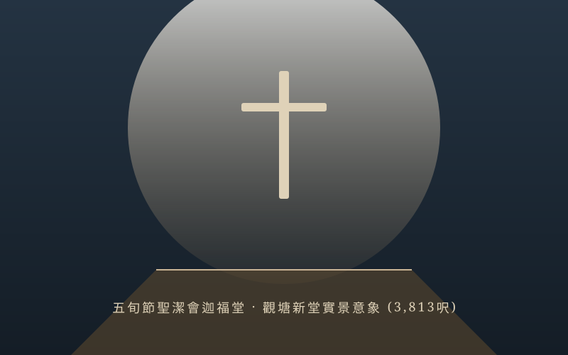

關於我們
扎根於真理，在愛中彼此結連，在基督裡合一建造屬靈家園。
堂會歷史與恩典腳蹤
五旬節聖潔會迦福堂創立於香港，歷經數十載歲月。從早期的聚會場所，到今日在觀塘電訊一代廣場購置 3,813 呎的嶄新堂址，每一步都寫滿了上帝奇妙的引導與弟兄姊妹信心的擺上。
九龍城創堂與開展事工
迦福堂於九龍城開展宣教牧養事工，播撒福音種子，聚集渴慕真理的群羊，奠定穩固的屬靈基石。
推動「天國小錢」建堂奉獻計劃
面對租金上漲與事工空間拓展的需要，全堂啟動「天國小錢」物業首期及供款捐獻計劃，眾肢體憑信心委身儲蓄擺上。
購入觀塘電訊一代廣場 23 樓物業
神賜下豐盛的應許之地，成功購置觀塘成業街 86 號電訊一代廣場 23 樓 A 室（面積達 3,813 呎），展開現代化崇拜空間規劃。
新堂正式啟用與獻堂感恩崇拜
全體會友踏上「Together We Build in Faith 踏上信心之旅」，於新堂舉行盛大獻堂感恩崇拜與愛筵，邁向全新宣教里程碑！
牧養團契與「家」架構
迦福堂以「團契」與「家/小組」為牧養核心，關顧各生命階段的成長需要
長者及成年牧養
以諾團 (Enoch)：注重靈命深造、聖經研讀與長者肢體關顧。
雅比斯之家 (Jabez)：求神擴張生命境界，充滿溫暖與守望。
在職青年與家庭
安得烈團 (Andrew)：職場青年與壯年主力，實踐信仰於職場與家庭。
包含小組：申命小組、因愛小組、葡萄園小組、承命小組、希臨小組。
青少年、大專與青年
少年團 & 提摩太團 (Timothy)：培育青年領袖。
燃愛之家、揚光之家、活泉之家、使命之家、棋匯坊：充滿活力與多元創意。
教牧與幹事團隊
林肇楓 牧師
主任牧師 (Rev. Siu Fung Lam)負責堂會全盤牧養、宣道講道及教導事工，帶領迦福堂邁向建堂與宣教新異象。
Mel Mong / Maggie Lam
幹事同工 (Church Administration)負責堂會行政管理、崇拜程序協調、會員事務及奉獻收據核實事宜。